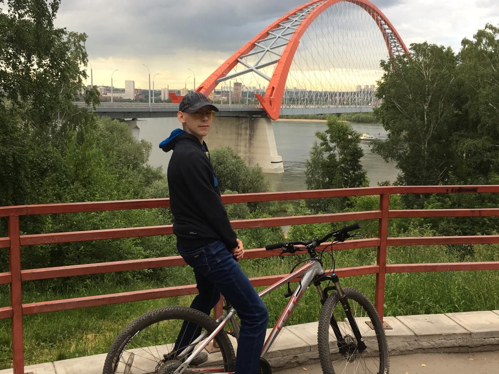
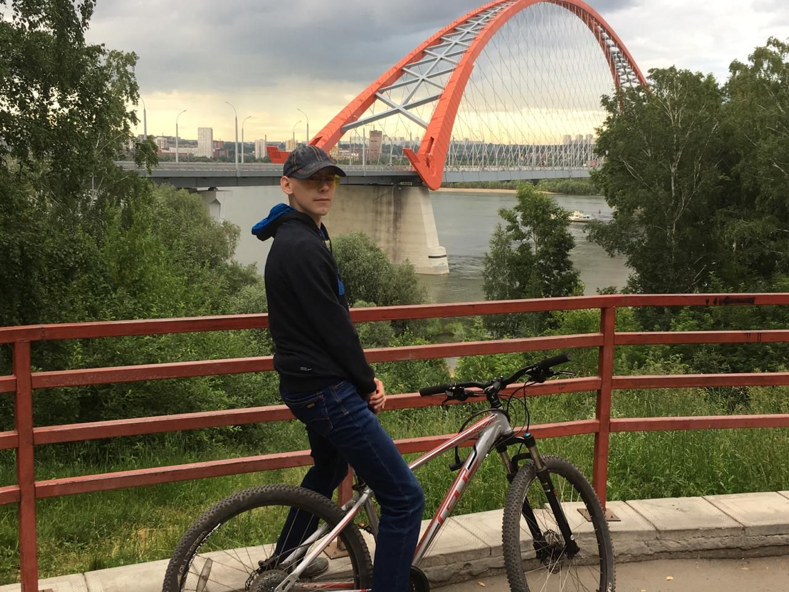

Велоспорт!
Велосипедные прогулки - одна из самых важных для меня занятий. Это мое самое основное и любимое хобби, чтобы отдохнуть от городского шума.
Велосипедные прогулки - одна из самых важных для меня занятий. Это мое самое основное и любимое хобби, чтобы отдохнуть от городского шума.
Изучение языков, один из ключевых факторов для программистов, написание программ, путешествия по планете, все это проходит с общением с людьми и самый основной в наше время является английский. Знание нескольких языков расширяет угол зрения для оценки задач.
Техника – цитаты и афоризмы:
Мне очень нравится познавать что-то новое, упрощать сложное и
конечно сомневаться...*А почему так?
Главное — не научиться читать. Гораздо важнее научиться сомневаться в прочитанном.